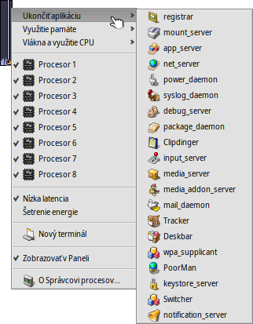
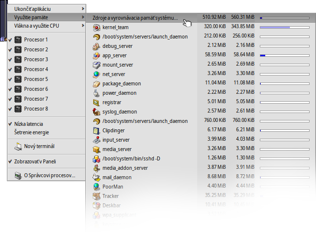

Slovenčina
Slovenčina Français
Français Deutsch
Deutsch Italiano
Italiano Русский
Русский Español
Español Svenska
Svenska 日本語
日本語 Українська
Українська 中文 ［中文］
中文 ［中文］ Português
Português Suomi
Suomi English
English Správca procesov
Správca procesov
| Panel: | ||
| Umiestnenie: | /boot/system/apps/ProcessController | |
| Nastavenia: | žiadne |
 Primárna úloha Správcu procesov je zobrazovať aktivitu vašich CPU a množstvo používanej pamäte. Umožňuje monitorovať jednotlivé skupiny, meniť ich priority, a ukončiť ich v prípade, že program zamrzne. V prostredí s viacerými procesormi vám umožňuje vypnúť jednotlivé procesory/jadrá. Keď zlyhá Tracker alebo Panel, môžete ich reštartovať v menu Správcu procesov.
Primárna úloha Správcu procesov je zobrazovať aktivitu vašich CPU a množstvo používanej pamäte. Umožňuje monitorovať jednotlivé skupiny, meniť ich priority, a ukončiť ich v prípade, že program zamrzne. V prostredí s viacerými procesormi vám umožňuje vypnúť jednotlivé procesory/jadrá. Keď zlyhá Tracker alebo Panel, môžete ich reštartovať v menu Správcu procesov.
Indikátory vľavo zobrazujú využitie každého CPU, zatiaľ čo stĺpec napravo ukazuje spotrebu pamäte. Pamätajte, že počet indikátorov závisí od počtu procesorov/jadier v počítači.
Po spustení Správcu procesov sa vás aplet opýta, či ho chcete spúšťať v okne alebo nainštalovať do Panelu. V režime okna sa dá ikone meniť veľkosť zmenou veľkosti okna a aplet sa dá pretiahnuť na plochu pomocou rúčky Replikanta. Nezávisle na tom, kde je nainštalovaný, ovláda sa kontextovým menu vyvolaným kliknutím pravým tlačidlom myši.
Aplet z Panelu odstránite odškrtnutím v kontextovom menu.
Ukončenie aplikácie
Aplikáciu ukončíte jednoducho tak, že vyberiete jej názov v menu . Toto je čistý spôsob zatvárania aplikácie, rovnako ako kliknutie na tlačidlo Zatvoriť. Dávajte si ale pozor, aby ste takto neukončili systémové procesy ako sú servery alebo démony. Váš systém by mohol prestať fungovať spoľahlivo.
Využitie pamäte
Monitorovanie využitia pamäte môže byť dosť nepresné.
Toto menu vám umožňuje monitorovať využitie pamäte rôznych tímov vo vašom systéme. Vedľa názvy skupiny sú dva stĺpce: prvý zobrazuje množstvo vyhradené pre zapisovateľnú pamäť, zatiaľ čo druhý zobrazuje všetku pamäť vrátane tej, ktorá je iba na čítanie (napríklad zdieľané knižnice).
Prvý riadok Zdroje a vyrovnávacia pamäť systému zobrazuje celkové množstvo pamäte, ktorú využíva systém a všetky aplikácie. Dĺžka modrého pásma závisí od množstva celkovej fyzickej pamäte vo vašom počítači. Ďalšie riadky zobrazujú pamäť využívanú každým procesom. Dĺžka pásma závisí od skutočne využívanej časti pamäte.
| Pamäť využívaná výlučne danou aplikáciou (s prístupom na zápis) | ||
| Pamäť vrátane tej, ktorá je iba na čítanie (môže byť zdieľaná s inými aplikáciami) |
Vlákna a využitie CPU
Toto menu vám umožňuje meniť priority vlákien, ukončovať tímy alebo ladiť ich.
| Kód jadra | ||
| Kód používateľského priestoru | ||
| Nečinné vlákno |
V prvej úrovni môžete vidieť názvy tímov. Kliknutím na jeden z nich môžete celý tím ukončiť. Tmavomodrá časť stĺpca predstavuje čas strávený v kóde jadra, bledomodrá časť v kóde používateľského priestoru, zelená časť v nečinných vláknach. Pásmo celé vyplnené modrou znamená, že skupina využíva všetok výpočtový výkon.
Druhá úroveň zobrazuje jednotlivé vlákna tímu. Kliknutím na jedno z nich ho môžete ukončiť alebo ladiť. Pásmo celé vyplnené modrou znamená, že vlákno vyčerpáva jeden procesor/jadro.
Posledná úroveň menu vám umožňuje zmeniť prioritu vlákna. Používajte to však opatrne! Základné pravidlo je také, že priorita by mala byť opačná k využitiu CPU. To znamená, že čím viac času CPU sa snaží vlákno získať, tým nižšia by mala byť jeho priorita. Vo všeobecnosti sa snažte nehrať sa s prioritami aplikácií; kontaktuje ich autora, jeho sa to týka.